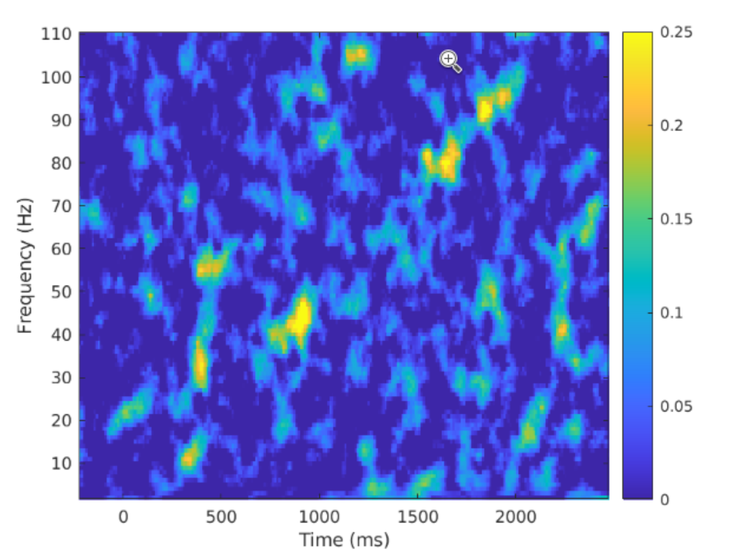
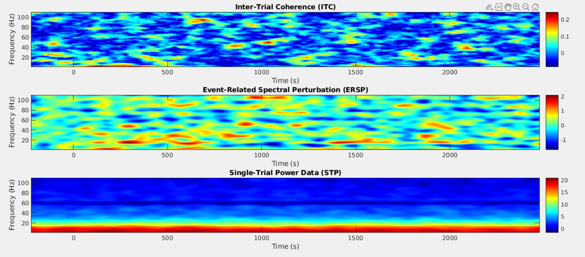

Calculating Inter-trial Coherence and Event-Related Spectral perturbation for Chirp files
Overview
The eeg_htpCalcChirpItcErsp function calculates Inter-Trial Coherence
(ITC), Event-Related Spectral Perturbation (ERSP), and Sinlge-Trial Power (STP) Data from EEG data, particularly in response to auditory chirp stimuli.
It leverages EEGLAB's newtimef
function to compute ITC and ERSP, enabling the analysis of frequency-domain
responses across time for specified EEG channels. This function can handle artifact
rejection, baseline correction, and analysis over regions of interest (ROIs) and frequency ranges.
Chirp refers to an auditory stimulus that contains white noise burst controlled by a sinusoid linearly increasing from 0 to 100 hz. The EEG files that are inputted into this function will contain this stimulus. ITC is used to measure how consistent one's brain is across multiple trials, a low ITC is equivalent to more variability. ERSP is a measure of even-related brain dynamics induced in the eeg spectrum by stimulus or event. STP is the probability in which a study is able to determine the difference between the actual effects and chance occurence of a treatment.
Here is an image of principal components analysis (PCA) componenent waveform and the affect that a chirp stimulus has on it:
 (Note This image came from Neural synchronization deficits linked to cortical hyper-excitability and auditory hypersensitivity in fragile X syndrome by Ethridge et al.)
(Note This image came from Neural synchronization deficits linked to cortical hyper-excitability and auditory hypersensitivity in fragile X syndrome by Ethridge et al.)
Function Syntax
[EEG, results] = eeg_htpCalcChirpItcErsp(EEG, varargin)
Inputs
EEG: An EEGLAB structure with EEG data, including channels, event markers, and epochs.
Optional Parameters
You can adjust these optional parameters using MATLAB's varagin, value syntax:
tlimits: (default: [-500 2750])
Specifies the time range (in milliseconds) for the analysis. The first value is the start time, and the second value is the end time relative to the event marker.
flimits: (default: [2 110])
Defines the frequency range (in Hz) to be analyzed. The first value is the minimum frequency, and the second is the maximum frequency.
cycles: (default: [1 30])
Specifies the number of wavelet cycles for the time-frequency analysis. The first value indicates the minimum cycle length, and the second value defines the maximum length.
timesout: (default: 250)
The number of time points to output across the specified time range. It determines the temporal resolution of the results.
winsize (default: 100)
Sets the size of the sliding window (in data points) used for the short-time Fourier transform. Affects the temporal resolution.
nfreqs (default: 109)
The number of frequency bins to output within the specified frequency range. Determines the frequency resolution.
outputdir (default: tempdir)
Path to the directory where result files (e.g., images or data files) will be saved. Defaults to the system's temporary directory.
sourceOn (default: false)
If true, uses source-level data (e.g., regions of interest from source reconstruction) instead of electrode-level data for analysis.
emptyEEG (default: true)
If true, clears the EEG data field to save memory after processing. Use this option if memory is a concern.
ampThreshold (default: 120)
Amplitude threshold (in microvolts) for artifact rejection. Trials with any channel exceeding this threshold are excluded from the analysis.
byChannel (default: false)
If true, computes ITC and ERSP for each channel separately. If false, computes the average across a defined set of channels.
baselinew (default: [-500 0])
Specifies the baseline period (in milliseconds) for baseline correction of ERSP values. If left empty (NaN), no baseline correction is applied.
Output
EEG: The input EEGLAB structure with updated data and metadata fields.
results: Structure containing the ITC, STP, ERSP calculations, as well as summary tables and quality indicators for each channel or ROI analyzed.
It can also output a plot of the uncorrected ITC when plotroi is set to true. However, this requires the user to go into the function details and change it directly rather than using varagin parameters. Here is an example of such plot:

Methods
Preprocess EEG Data
Prepare your EEG data with preprocessing steps like filtering, referencing, and epoching around the stimulus of interest. This function requires trial-based EEG data with time-locked events.
EEG = pop_loadset('your_data.set'); % Load your EEG dataset
Define Function Parameters
Specify parameters to configure time limits, frequency limits, baseline correction, and more. The following example sets up analysis parameters for an auditory chirp response:
params = {
'tlimits', [-500 2750], ... % Time window in milliseconds
'flimits', [2 110], ... % Frequency range in Hz
'baselinew', [-500 0], ... % Baseline correction window
'cycles', [1 30], ... % Number of cycles for time-frequency decomposition
'ampThreshold', 120, ... % Amplitude threshold for artifact rejection
'byChannel', true, ... % Compute ITC and ERSP by channel
'sourceOn', true % Use source-labeled channels
};
Run the Function
Run the eeg_htpCalcChirpItcErsp function with the EEG structure and specified parameters.
[EEG, results] = eeg_htpCalcChirpItcErsp(EEG, params{:});
Inspect the Results
The output results structure includes several fields:
summary_table: Contains key metrics, including mean power and coherence values for different ROIs and frequency bands.
qi_table: A summary table with details on the processed EEG file.
amp_rej_trials: Lists trials rejected due to high amplitude artifacts.
ersp1: ERSP matrix for each frequency and time point. Can be used for an idicator for sensory processing and habituation.
itc1 and rawitc1: Corrected and uncorrected ITC matrices. ITC measures how consistently your brain reacts to the same stimulus over and over.
STP1: STP matrix for each frequency and time point. Measures the intensity of neural activity at a specific frequency and time point during a trial
Example of inspecting the summary table:
disp(results.summary_table); % Display the summary of ITC and ERSP values
Full use Example
% Load EEG data
EEG = pop_loadset('your_data.set');
% Run ITC and ERSP analysis
[EEG, results] = eeg_htpCalcChirpItcErsp(EEG, ...
'tlimits', [-500 2750], ...
'flimits', [2 110], ...
'baselinew', [-500 0], ...
'ampThreshold', 120, ...
'byChannel', true, ...
'sourceOn', true);
% Display summary of results
disp(results.summary_table);
When the ITC, ERSP, and the STP are all graphed they will look similar to the following example:

Additional Notes
Data Consistency: Ensure the chosen parameters, particularly tlimits and flimits, align with your experiment's stimuli and objectives.
ROI Selection: Adjust ROIs to target specific brain regions of interest for more tailored ITC and ERSP analysis.
Artifact Management: Review amp_rej_trials to confirm adequate artifact rejection and maintain data quality.